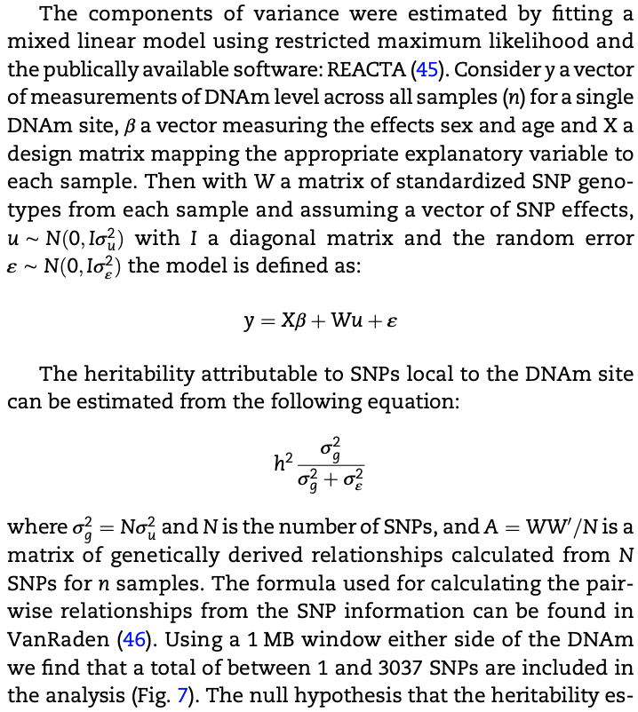

\(V_{p} = V_{G} + V_{E} = V_{A} +V_{D} + V_{E}\)
\(h_{b}^2 = V_{G}/V_{P}\)
\(h^2 = V_{A}/V_{P}\)
A quantitative framework of family stuides, for example, \(h^2=Vg/Vp ~ covariance(offspring, one parent)\)
More details from Heritability estimation from J.Yang Lab.
linear mixed model (LMM) framework
y = Xb + Zu + e
X: fixed effect
Z: random effect
u ~ N(0, sigma1)
e ~ N(0, sigma2)
y: phenotype vector
Z: n x p matrix
n: number of samples
p: number of SNPs
element in Z: 0 ,1, 2 <=> aa, Aa, AA
Apply LMM to estimate sigma1 and sigma2
h2 = p*sigma1 / (p*sigma1+sigma2)
if using CpG (or metabolite or gene expression) as endo-phenotype, per CpG site heritability can be estimated.
For example:

In one of my projects, I applied linear mixed model to estimate heritability in fruit fly (Using Drosophila to identify naturally occurring genetic modifiers of Aβ42- and tau-induced toxicity, PMID: 37311212, https://github.com/mingwhy/AD_fly_eye), 02_AD_fly_eye, Caluclate best linear unbiased predictor (BLUP) and broadsense heritability (H2B).